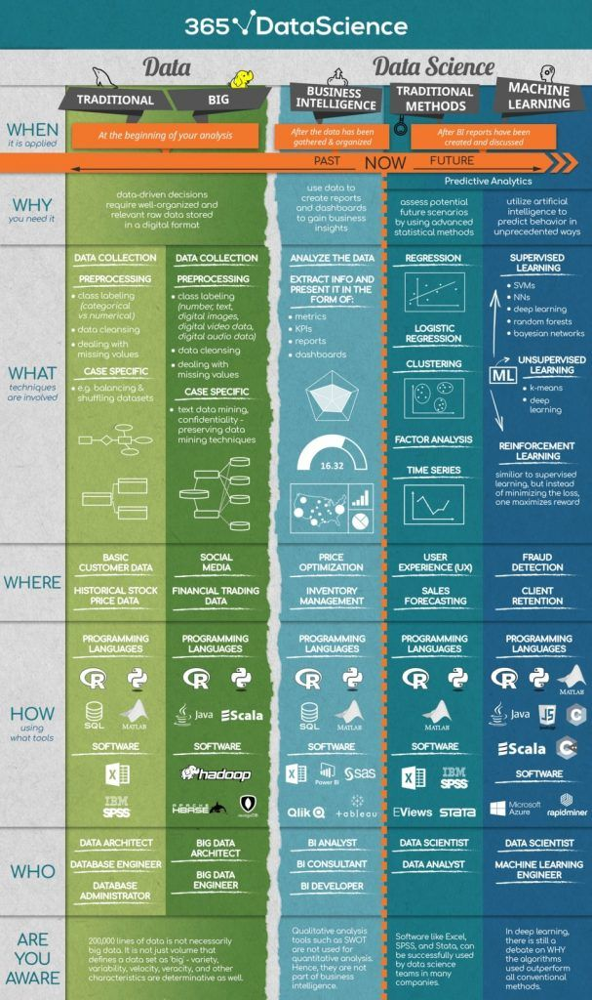

Skip to main content
MBAn Career Handbook
Show table of contents
Table of contents
Chapter 4
Career Choices
View book source
4
Career Choices
4.1
Expected Career Outcomes
This is the list of the major career choices after a Business analytics program.
Business Analyst Consultant
Product Management
Business Analyst/Data Scientist
4.1.1
Business Analyst Consultant
4.1.2
Product Management
4.1.3
Business Analyst
4.1.4
Data scientist
Who -
What -
How -
Companies -
Salary Range -
Data Engineer

4.2
Company Search Process
4.2.1
Deciding Dream
4.2.2
Networking
4.2.3
List of Companies
On this page